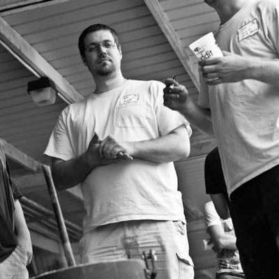
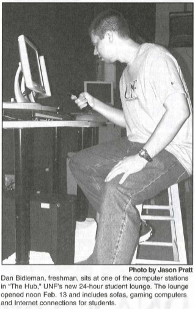
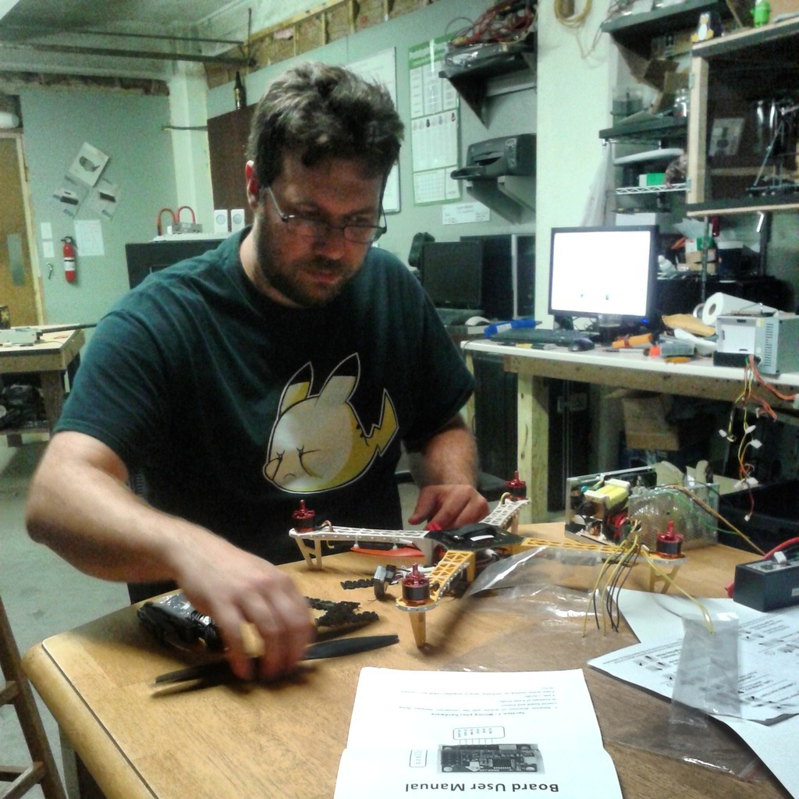
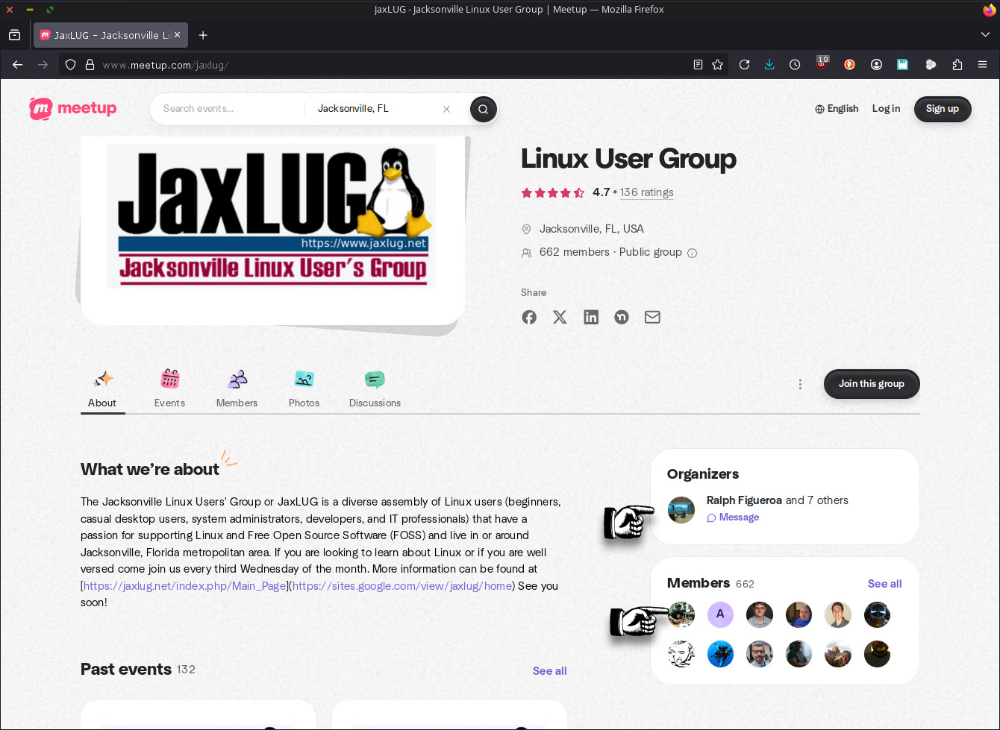
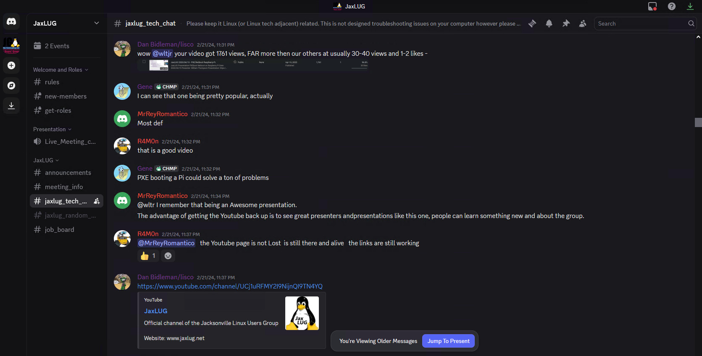
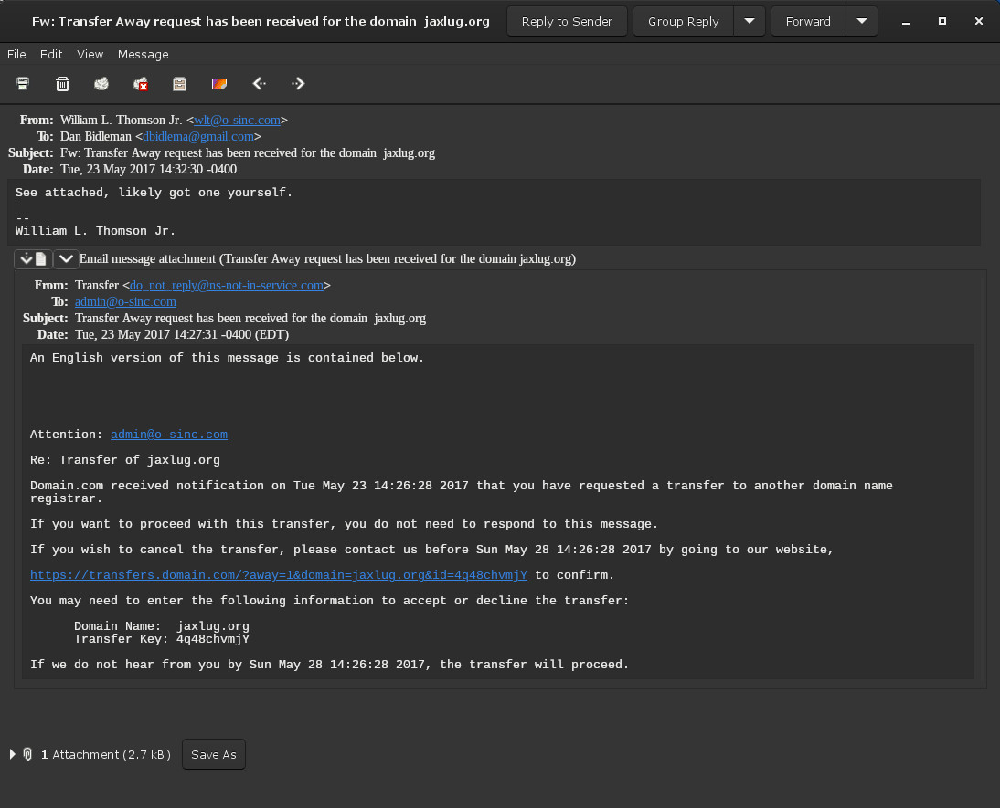
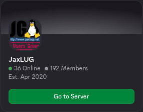

Dan Bidleman

This aims to cover the history of Dan Bidleman in the past unofficial Jacksonville Linux Users Group community. There are people in this world who give off an impression of being highly skilled and experienced, but when it comes time for action, they fall short. Then, leaving a community in far worse shape than when you arrived, and still claiming to be part, to be some sort of "wheel" founder and member, yet abrogate in just about every responsibility of a steward.
Dan's actions are contrary to that of his appearance, and seriously brings Oracle into question! How can someone working for Oracle for 12 years and counting, rising in titles, currently being a Principle Software Engineer at Oracle corporation, lose a community domain name jaxlug.org, first registered in 1996, then failing to host a LAMP stack, or move it to cloud hosted, GitHub, etc, failures in leadership, and other issues.
Dan has a few monikers, Github handle lisco42, Discord handle kip formerly inoi (265313310629429248), X handle lisco42, and for reference, Dan's LinkedIn profile.
Dan claims on his LinkedIn that "I am an exceptional linux administrator and engineer", this remains to be seen, and in fact, all public evidence, including his own hosted website, proves otherwise! This also brings into serious question Oracle, if Dan is not who he presents himself to be, then is Oracle the company it presents itself to be?
This is a work in progress as Dan's community actions and conduct continue, which Oracle has been alerted to some 27 times over 2 months, Oracle is condoning Dan's destructive community conduct, and this page will be updated accordingly; time permitting. Oracle, is directly responsible for their employee's, Oracle's local representative, Linux community conduct, with Oracle being a Linux company.
UNF Origin

Dan's is a Jacksonville, Florida native, who attended University of North Florida (UNF) from 2001 - 2006. Dan's interest were in computing, as evident by UNF Spinnaker Volume 25, Number 21 from February 13th, 2002. It has been stated by Dan that he switched majors to Philosophy from computing, which cannot be verified, but philosophy major can be confirmed in UNF Spinnaker Volume 28, Number 20 from February 13th, 2002, where Dan is quoted as a senior philosophy major and founder of the Computer Gaming Club at UNF -- and head honcho! Dan has long boasted about such, which is evident in the article, "Marf-LAN sponsored by Computer Gaming Club". This is finally confirmed by Dan's LinkedIn profile, where he states that he was a student at UNF from 2001 - 2006, having been awarded a Bachelors Degree in Philosophy from UNF in 2006; where it also mentions his past with computer gaming club.
It can be established that Dan has both an interesting on gaming and computing, but it does seem primarily gaming focused; Dan could have started any computing club. The "head honcho" part is interesting, it implies a desire for positions of power and titles; hubris vs humbleness. Unless, one assumes the writer just added such colorful descriptive verbiage.
JaxLUG Start
Given there are no rosters or way of tracking in the past unofficial Jacksonville Linux Users Group it is hard to determine the exact date when Dan showed up, but the first publicly confirmable record is when he sent this reply to a post on the mailing list on September 10th, 2008; ironic mentioning UNF's ITS helpdesk. There is one other reply on November 29th, 2008, which another member William L. Thomson Jr. also sent a reply on the same thread.
This establishes Dan showing up sometime in 2008. It would not be until 2013 that Dan would first present, which per the poorly maintained meeting history page occurred on October 16th, 2013.
Florida State College at Jacksonville (FSCJ) Career
Per Dan's LinkedIn profile, he was a System Engineer IV at FSCJ from 2009 to 2014. What is not mentioned on there is that Dan also taught a Linux course at FSCJ; which appears to be CNT 1015C - Operating Systems Foundations. The exact course name and topic can not be confirmed, but online ratings of Professor Dan exist from 2011 and 2013, confirming him teaching at FSCJ. Why this is missing from his LinkedIn is unknown.
Oracle Career
Per Dan's LinkedIn profile, he began his employment with Oracle in 2014 with the titles of IT Senior Consultant and Principle System Administrator. As of the start of 2026, Dan remains employed with Oracle, 12 years and counting.
JaxLUG Leader
Per this mailing list post by Rob McKennon in July 2015 announcing Dan Bidleman was "elected" to become the leader of the past unofficial Jacksonville Linux Users Group at a meeting in-person by unknown voters with unknown unrecorded results. This positions has been referred to by legal titles such as "President", but the group has not had a legal presence since 2004. This appears to be when Dan first undertook the unofficial leadership role which he was honored by per this mailing list post; Dan an Oracle employee.
Per additional mailing list post, "elections" where held in July 2016, with unknown voters with unknown unrecorded results, there does not seem to be a results post, but Dan remained as president per this mailing list post in January 2017.
This repeated in July 2017 per this "elections" post, with unknown voters with unknown unrecorded results, there does not seem to be a results post, but Dan remained as president per this mailing list post in September 2017.
This repeated in July 2018 per this "elections" post, with unknown voters with unknown unrecorded results, there does not seem to be a results post, but Dan remained as president per this mailing list post in September 2018.
This repeated in July 2019 per this "elections" post, which appears to be the first mention of who the previous years elected "officials" were, with unknown voters with unknown unrecorded results, there does not seem to be a results post, but Dan remained as president per this mailing list post in November 2019, where Dan also announces B-Sides Jax, which he has connection to since its inception.
In 2020, the COVID Pandemic hit.
It is unknown what happened in the years between, "elections" resumed per this mailing list post in February 2023. For the first time, it appears the results were announced in this mailing list post in February 2023, and for the first time, tracking vote counts and methods with unknown voters; at least some attempt at legit elections!
2023 appears to be the last year of Dan's leadership. It was also in 2023 that the jaxlug.org domain name was lost.
Meetup Group

When Dan first became leader in 2015, Dan first announces in this mailing list post a Meetup Group that someone unilaterally created without any discussion, Ralph Figueroa, and this is the first mention of said Meetup, which lists Dan as number two; both remaining as of 2025 Ralph the owner, with Dan as number two.
We do request ownership transfer of the Meetup Group to the Official Legal Jacksonville Linux Users Group Inc., and that Dan help facilitate this request given his relationship with the group.
Oracle has been informed of this request, we simply seek compliance vs resistance from Dan!
YouTube Channel

At some point in 2017, Dan created a YouTube channel and began to upload meeting recordings there. Unfortunately, for some unknown reason this stopped. Dan still has control of this channel, as of February 24th, 2024.
We do request ownership transfer of the YouTube channel to the Official Legal Jacksonville Linux Users Group Inc., especially, given that William has the top viewed video, and seeks to make it one of the least, with new members videos gaining more viewers!
Oracle has been informed of this request, we simply seek compliance vs resistance from Dan!
JaxLug.org Transfer

In 2017, William transferred the JaxLUG.org domain name to Dan. This transfer was done with full confidence that Dan would be a proper steward, given his employment at Oracle a Systems Administrator, and his claimed abilities. This was pre-promotion in 2019 to Software Engineer at Oracle.
There is no way an Oracle employee, an Oracle engineer, an Oracle systems administrator, could possible lose a community domain name. This was the basis for the transfer, Dan was reliable per being an Oracle employee, based on Oracle's reputation. This was a mistake!
In 2023, the JaxLUG.org domain name was lost!
Oracle has been requested to help pay for the recovery of JaxLUG.org, we simply seek to for Oracle to pay for their employee's mistake that has cost the Linux community in Jacksonville Florida the loss of their primary domain name.
Discord Server

In April 2020, Dan unilaterally created a Discord server without discussion. In his defense, this was the year of COVID, however, Dan has never missed and opportunity to brag to William about the discord server he created!
It appears in September 2025, after having Dinner with William, it seems Dan transferred the ownership of the Discord server to Christian McLaughlin. The exact date when Dan transferred the discord server is unknown, and may have been to another before Christian, and/or done to Christian sometime before September 2025; as of September 2025 Christian was the discord server owner of the server Dan created.
Regardless, Dan created the discord, and therefore, as a leader and steward, is responsible for that which he created, no matter his role, long as he remains in the community, which he remains active in that Discord throughout all of 2025 up till the very end!
We do request ownership transfer of the Discord server to the Official Legal Jacksonville Linux Users Group Inc. or the server be deleted, and that Dan help facilitate this request given the server is his creation and he transferred ownership to abrogate his responsibilities; a futile attempt to indemnify himself from the results of his own creation.
Oracle has been informed of this request, we simply seek compliance vs resistance from Dan!
FSCJ Meetings

In 2021, it seems Dan may have been seeking to encourage another, Christian McLaughlin to perform a "leadership" role in the group. William L. Thomson, was working to get the unofficial Jacksonville Linux Users group meeting space at FSCJ via one of William's contacts, Ernie Friend; who has since departed FSCJ. William was unfamiliar with Christian, William did not want to risk his reputation with FSCJ on Christian which seems William was correct on, and therefore, involving Dan in communications with FSCJ and not Christian. Dan failed to proceed beyond the shown message.
Dan never followed up with Enrie Friend nor FSCJ, and as a result, meetings were not held there, and meeting space continued to be an issue into Fall 2025, which was one of my calls to action for William! Had Dan simply replied, things were setup, William had already done the work, all Dan need to do was follow through. Dan was pre-occupied with other things, as was William working on his Undergrad in Computer Science at UNF; William was extremely short on time, but made time to help the community!
B-Sides
This section will be completed at a later date, as we further establish Dan's relationship to the B-Sides Jax conference. What is known is that amazingly, the very day Oracle was first alerted on November 6th, 2025, that very day Dan is removed as Secretary from B-Side Jax annual filing, which typically take days to process per the published document processing dates; the chance that paperwork sent prior was processed same day, with sponsors contacted the day prior on November 5th, 2025, this is an unbelievable coincidence!
Betrayal
On September 13th, 2025, William L. Thomson Jr. had Dan over for dinner, he invited Dan into his home and William cooked dinner. They discussed many things, as William was taking time away from masters course research work. Toward the end, as Dan was departing, William had discussed some future theoretical plans for the Jacksonville Linux Users Group come 2026. Rather than support William in his efforts, it appears Dan has chosen betrayal. He alerted others, became defensive over his involvement with B-Sides, which William did not understand at that time, given how Dan spoke poorly of others for years, yet remains associated with them, which was shocking to William; until betrayal, then it became clear that is how Dan operates, as Dan likely had spoken poorly of William to others just as he did to William.
Rather than support, Dan chose opposition, chose to take time and make life more difficult for a person he has known for years, former gym work-out-partner, among social interactions, while they are in their final semester of a masters degree, with very limited time. What William mistook as a friendly request for dinner from Dan, was a spy mission. While William had no grand plans at the time, the course of actions from others have compelled William to act in ways he was not planning and much sooner!
William made it quite clear to Dan that others would seek to act against him, and rather than Dan perform any role of leadership or stewardship, it seems he transferred the ownership of the Discord server to Christian McLaughlin, who proceeded to silence and then ban William, exactly as William had told Dan in-person the day before that others would seek to do! Dan had advanced warning, ability to influence things otherwise, and Dan chose the path of most resistance.
William is quite blown away at Dan's conduct, between hindering his education, to interference with efforts to advance education for others, and various benefits to the community, but ones that may cost Dan his position in the community, and for that, Dan showed his true colors. For Dan, community service is for Dan, not for the community, it is self-serving, ego-driven, agenda-based on titles such as, head honcho, president, etc. It is not the titles that matter, it is the actions!
Dan lost jaxlug.org among many other things, all while working at Oracle, which all reflects back on Oracle, as their employee's community conduct. This speaks to the quality and skills of both Dan and Oracle! Real or not is for readers to decide. Dan appeared to be many things he is not!